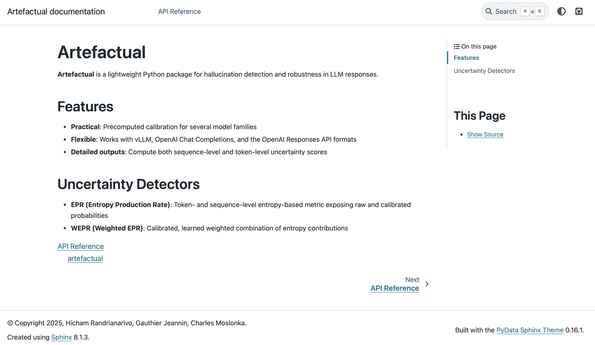
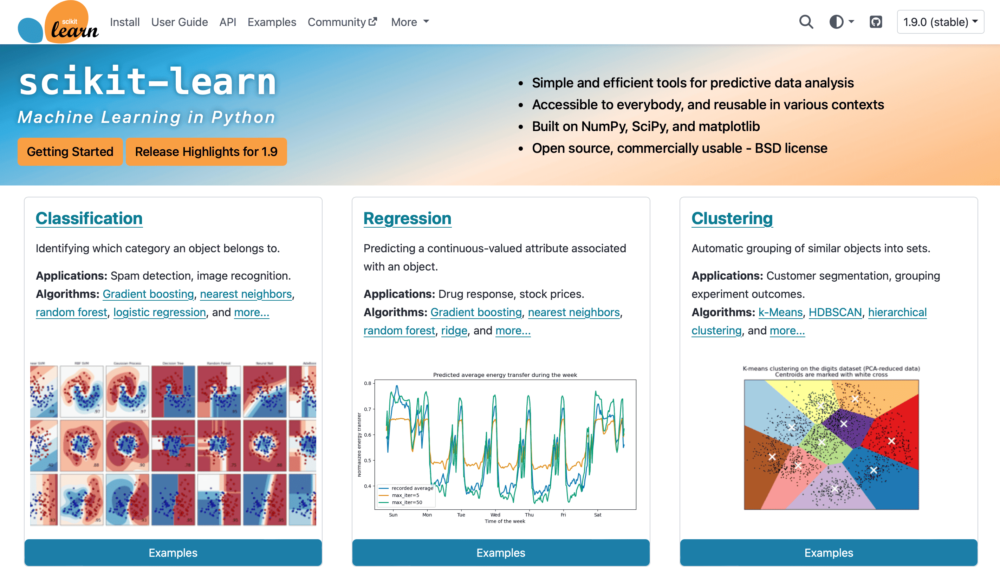
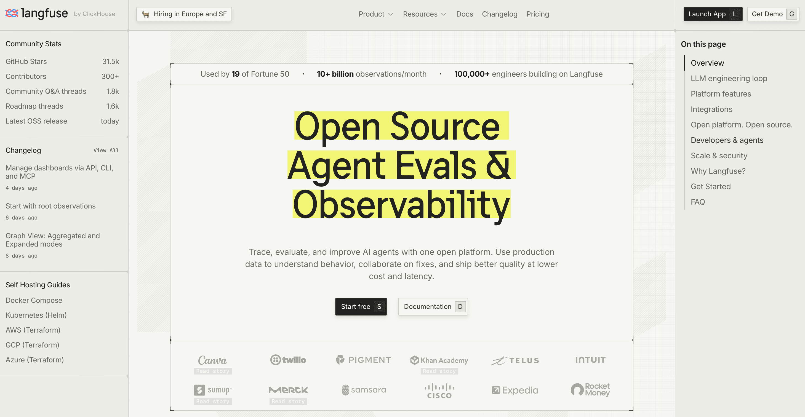
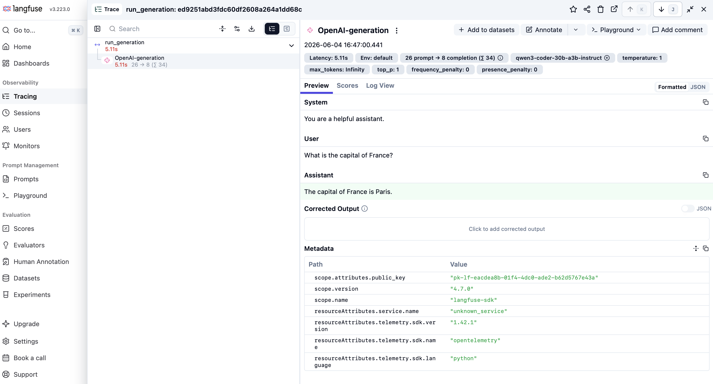
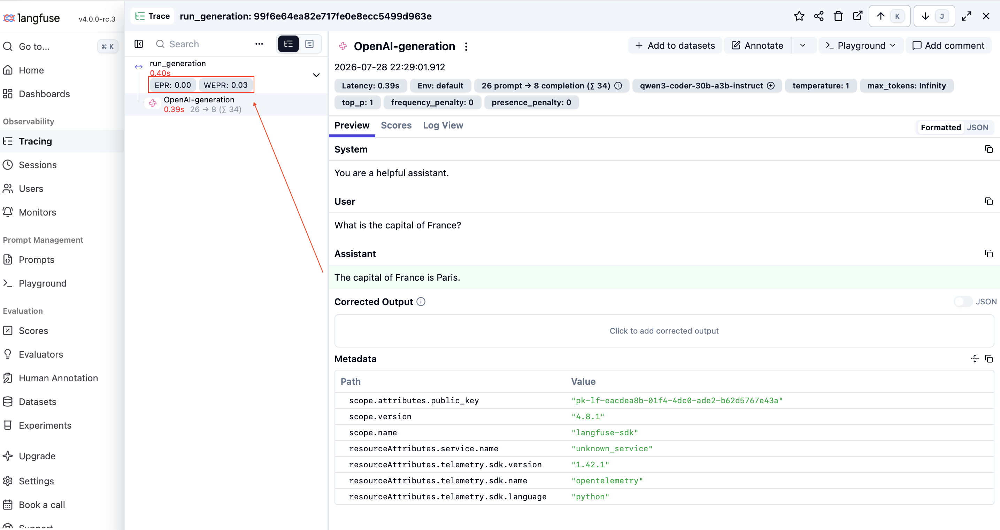
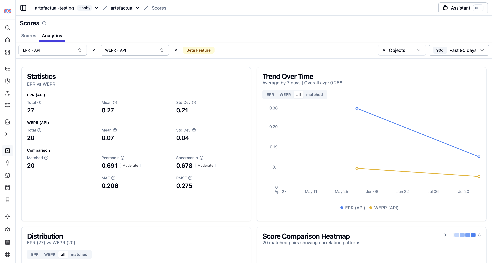
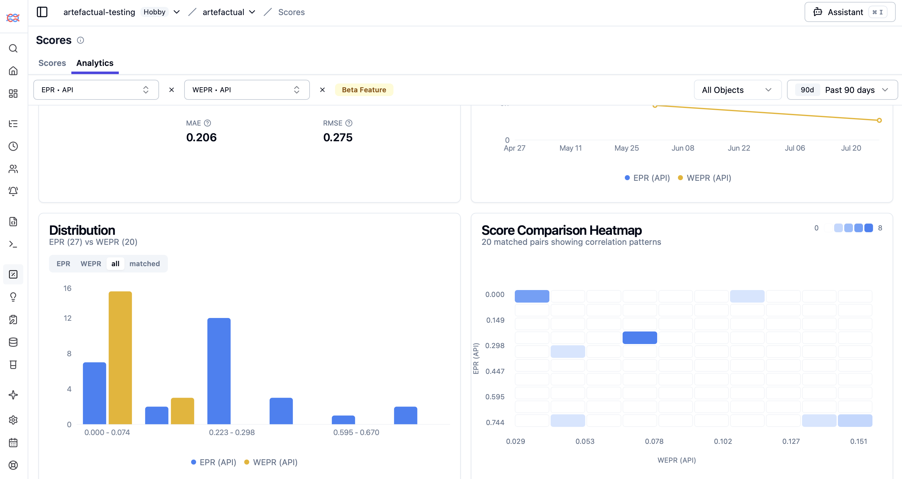

Évolution d’Artefactual : intégration Scikit-learn et Langfuse
Charlotte Le Bihan - Centre de Recherche Artefact
Hallucinations LLM
Informations qui semblent réelles mais ne correspondent pas à la réalité
Utilisateur : “Quelle est la capitale de l’Australie ?”
Réponse du LLM : “La capitale de l’Australie est Sydney.”
Faux. La capitale est Canberra.

Exemple :
Utilisateur : “Quelle est la capitale de l’Australie ?”
Réponse du LLM : “La capitale de l’Australie est Sydney.”
Potentiel distribution à ce moment-là :
| Token | Probabilité |
|---|---|
| Sydney | 0.42 |
| Canberra | 0.35 |
| Melbourne | 0.13 |
| Brisbane | 0.10 |
Distribution étalée → entropie élevée
Scores : EPR et WEPR
EPR - Entropy Production Rate
- entropie calculée à chaque token
- moyenne sur toute la séquence
WEPR - Weighted Entropy Production Rate
- poids appris par rang avec certains rangs etant plus informatifs que d’autres
→ les deux score entre 0 et 1
Objectifs du stage
Décision stratégique :
Refactoriser la librairie pour qu’elle soit plus accessible.
Deux implémentations concrètes :
- Compatibilité scikit-learn (la librairie ML de référence en Python) : intégrer Artefactual dans des workflows de ML
- Adaptateur Langfuse : connecter Artefactual à une plateforme d’observabilité open source utilisée par les DS

L’enjeu pour Artefactual
Pour s’intégrer dans cet écosystème, chaque étape doit respecter des règles précises ce qui a demandé de restructurer le code existant.
Comprendre un pipeline scikit learn
un pipeline = un objet réutilisable qui enchaîne plusieurs étapes de traitement
Pourquoi utiliser un pipeline scikit learn:
Simplicité : étapes structurées avec l’approche ML classique et familière
Sécurité : évite la fuite de données entre entraînement et test
Écosystème : accès direct aux outils sklearn (grid search, validation croisée, etc)
Pipeline design
Pipeline est une classe native de scikit-learn.
Le schéma général :
Transformer (hérite de BaseEstimator et TransformerMixin) :
.fit(X, y): apprendre des paramètres sur les données d’entraînement.transform(X): transformer les données et les passer à l’étape suivante
Estimateur :
.fit(X, y): entraîner le modèle.predict_proba(X): produire le score final
Le pipeline Artefactual
LogProbParser : extrait les log-probabilités
EntropyTransformer : mesurer l’entropie par token et extraire les features
LogisticRegression : convertit en score de hallucination
→ encapsuler par une classe BaseDetector qui hérite de Pipeline
LogProbParser
Transforme les réponses brutes du LLM en array numpy structuré de log probabilités.
Problème :
- sklearn attend un array numérique en entrée, mais
LogProbParserreçoit une liste de dicts (JSON brut) - il rejette l’entrée avant même d’appeler
transform()
Solution :
- déclarer
__sklearn_tags__()pour dire à sklearn d’accepter ce format non standard- un tag = une simple valeur booléenne (True ou False) qui sert d’indicateur pour autoriser, interdire ou vérifier certaines conditions de fonctionnement
Problème : les séquences sont des listes et n’ont pas toutes la même longueur
Solution :
- NaN-padding pour retourner un array
(n_samples, max_tokens, k) - Possibilité d’utiliser les opérations numpy de manière vectorielle
EntropyTransformer
Prend l’array de logprobs structuré et calcule l’entropie par token pour chaque séquence.
Problème : sklearn vérifie que fit() a été appelé avant d’autoriser transform() or EntropyTransformer est stateless (=il n’a rien à apprendre)
Solution : déclarer requires_fit=False dans __sklearn_tags__() pour désactiver cette vérification.
Problème : sklearn rejette les NaN dans les données par défaut, or l’array venant de LogProbParser en contient (le padding)
Solution : déclarer allow_nan=True dans __sklearn_tags__() pour passer la validation.
Problème : EPR et WEPR calculent les features différemment
Solution : un paramètre reduction qui accepte "epr", "wepr"
def _epr(x, axis) -> np.ndarray:
is_nan = np.isnan(x)
padded = np.all(is_nan, axis=-1, keepdims=True) # fully-NaN (padded) tokens
s = np.nansum(x, axis=-1, keepdims=True) # sum over k (rank axis)
s = np.where(padded, np.nan, s) # nansum gave 0 for padded tokens → restore NaN
return np.nanmean(s, axis=axis) # pool over the token axis
def _wepr(x, axis) -> np.ndarray:
mean_branch = np.nanmean(x, axis=axis)
max_branch = np.nanmax(x, axis=axis)
return np.concatenate([mean_branch, max_branch], axis=-1)
STRATEGIES = {"epr": _epr, "wepr": _wepr}Chargement du détecteur
Un LogisticRegression scikit-learn, entraîné ailleurs et publié au format skops.
- le détecteur est un
Pipeline:LogProbParser→EntropyTransformer→LogisticRegression EPR.from_pretrained(nom)/WEPR.from_pretrained(nom)résolvent le nom vers un dépôt Hugging Face et chargent le.skops- un chemin local vers un
.skopsest accepté à la place du nom
Problème : quand on charge des poids avec from_pretrained(), on n’a jamais appelé fit() ce qui nous empeche de lancer predict_proba()
Solution : après avoir chargé le JSON, injecter manuellement les attributs que sklearn attend après un fit() : coef_, intercept_, classes_… pour qu’il reconnaisse le modèle comme entraîné
Langfuse : qu’est-ce que c’est ?
→ plateforme open source pour monitorer et évaluer des apps LLM
→ utilisée par des dizaines de milliers d’ingénieurs (Canva, Khan Academy, Apple…)

La trace
Tout s’organise autour d’un concept central : la trace.
une trace = un appel LLM enregistré
Chaque requête envoyée à un LLM génère une trace qui capture :
le prompt envoyé
la réponse générée
les métadonnées associées (version de langfuse, log probabilités …)
Le problème
Artefactual ne se connecte pas nativement à Langfuse → pour scorer une génération, il faut extraire manuellement les données de chaque trace.

L’adaptateur : comment ça marche
HallucinationEvaluator, une classe qui fait le pont entre Langfuse et Artefactual
on initialise avec un nom, un client Langfuse et un détecteur
on boucle sur les traces
Sous le capot, score_trace() :
- récupère la trace grace a un appel vers le serveur Langfuse
- le texte généré (trace.output) est transmis a self.detector.predict_proba pour avoir calculer le score d’hallucination
- construction d’un identifiant unique basé sur la combinaison de la trace et du score pour s’assurer que Langfuse ne créera pas de doublons
- renvoie le score dans Langfuse
Exemple d’usage
# un détecteur exige toujours des poids de calibration
# le détecteur entraîné pour le modèle scoré, pas le modèle lui-même
CALIBRATION = "artefactory/epr-ministral" # resolved from the Hub
evaluator = HallucinationEvaluator(
name="EPR",
langfuse_client=langfuse,
detector=EPR.from_pretrained(str(CALIBRATION)),
)
for trace in traces_to_evaluate:
score = evaluator.score_trace(trace.id)Résultats



Conclusion
Adaptateur Langfuse : intégration open source, réplicable par n’importe qui utilisant Langfuse
Extension scikit-learn : Artefactual devient compatible avec l’écosystème ML standard
Perspectives
PyData : soumettre la librairie à la conférence pour la faire connaître à la communauté
Autres plateforme : étendre la librairie a d’autres platforme d’observabilité

Comment Artefactual détecte une hallucination ?
a chaque token généré, le LLM produit une distribution de probabilités sur son vocabulaire
si le modèle est sûr de lui, la distribution est concentrée sur un token et s’il hésite, elle est étalée
on mesure cette hésitation avec l’entropie : plus la distribution est étalée, plus l’entropie est élevée.